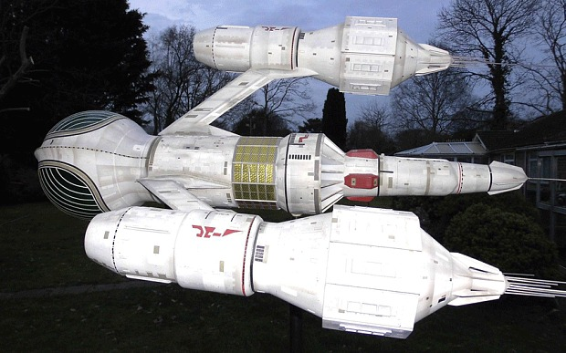

Trees and stuff
Welcome to trees and this is what you need to know:
- The are very tall
- They have leaves
- live for a long time
- Some are magic
For more information please see the
BBC Website
.
Images and media
Here is an example of how to place an image.

The Liberator from Blake's 7
Here is a map: